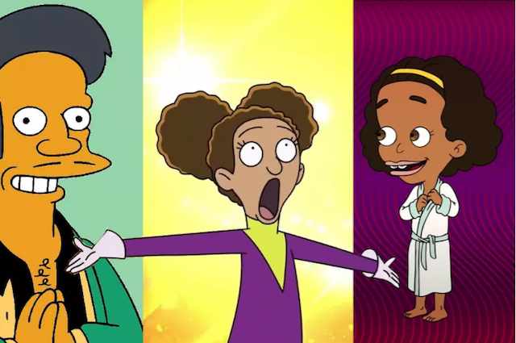

This project examines the "social network" of the American animation industry, focusing on content creators of the last 30 years. Though repsresentation on screen is improving what's even more important is who gets to tell the stories of people of color. As we all know in Hollywood its all about who you know, so with this project I set out to create that network of people visually. In addition I was interested in the counterculter that had been able to form thanks to social media and other online avenues. The chart below is a network graph of a social network within TV networks. Try saying that 5 times fast! But before that let's add some context.
Summer of 2020 several high-profile white actors on popular TV shows like Big Mouth and Central Park stepped down from their roles playing black or biracial characters. Though that was noble of them I couldn't help but wonder "Who put them there?" "Who are the writers and producers of these shows that we love?"
There is only one annual study by the Annenberg Institute in California on diversity in Hollywood. According to their 2019 study only 3% of roles in animated TV and film went to women of color. In addition between 2007 and 2016 only one black director helmed an animated film. Seeing these numbers and the gap in the field I set out to create a dataset that I would be working with. In order to do this I combined several different files that IMDb has made available to the public. IMDb gives you the up to 10 people that have worked on a show or a phone based on how they are ordered on the IMDb page for that show or film, so the people in this data set are not chosen by me they are the people who were in The IMDb datasets. In addition I added information through my own searches on Google, Wikipedia, and the fandom pages of individual shows. Shout-outs to the fandom pages! Y'all had everything I couldn't find easily. The graph below includes information for the 50 most popular American animated series from 1989 to the present. I based my design off of an observable by Raven Gao.
The graph up above can seem a bit bleak but change is on its way. Noticing the gap in black woman animators Taylor Shaw created Black Women Animate in 2018. This organization serves as a space for Black women animators to network, offers professional development opportuinites and recently held their first annual Awards in partnership with Cartoon Network. Looking ahead they are also setting out to creating a multi-year trainsing program for young girls to foster the next generation of animators. Summer of 2020 several high-profile white actors on popular TV shows like Big Mouth and Central Park stepped down from their roles playing black or biracial characters. Though that was noble of them I couldn't help but wonder "Who put them there?" "Who are the writers and producers of these shows that we love?"
Thanks to Alternative spaces like the black women animate Studios and accessible forms of publication like Instagram and webtoon people are able to create their own and have access to imagery outside of mainstream television. Black women animate is a collective of black women animators that provides networking and professional development opportunities, serve as artist for hire and work on projects for other companies, and recently had their inaugural black women anime Awards and Conference in partnership with Cartoon Network. They are committed to grooming the next generation of animators with part of the future plans for the organization including a multi-year program for young girls to learn animation. thanks to social media there are black artists creating and sharing their versions popular cartoons and new works that they're creating and have followings. Places like webtoon A free site where people can post their comics has also led to the production of shows of popular comics as animated series through it's partnership with Crunchyroll. these newer more direct to consumer forms of production and distribution are changing the landscape in animation. thanks to the internet more people have access to